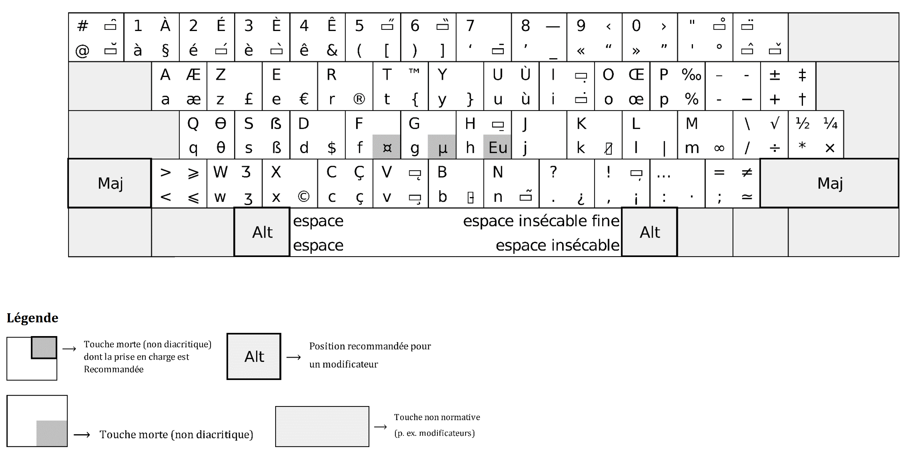

Norme française NF Z71-300
Clavier AZERTY Amélioré projet lancé par le ministère français de la Culture pour faciliter l’écriture du français, des langues régionales et des langues européennes à alphabet latin, avec la même disposition sur Windows, macOS et Linux/Unix.
Une évolution du clavier AZERTY qui conserve vos habitudes, tout en rendant accessibles les caractères français et les lettres accentuées des langues à alphabet latin. Le projet a été lancé par le ministère de la Culture, normalisé par AFNOR (NF Z71-300), puis intégré nativement dans Windows 11 version 24H2.

Histoire & dates clés
Chronologie de l’AZERTY Amélioré
-
2015
Lancement du projet
Le ministère de la Culture demande à AFNOR de travailler sur une disposition de clavier plus adaptée au français moderne.
-
2017
Consultation élargie
Industriels, associations, experts linguistiques et ergonomes contribuent à la définition du futur standard.
-
2 avril 2019
Présentation officielle
La norme est présentée au ministère de la Culture, avant sa diffusion opérationnelle.
-
Avril 2019
Publication de la NF Z71-300
AFNOR publie la norme volontaire qui formalise l’AZERTY Amélioré.
-
Windows 11 24H2
Support natif Microsoft
La disposition normalisée française est intégrée officiellement dans Windows 11 version 24H2.
Pourquoi changer
Les problèmes du clavier français actuel
- Il n’existe pas historiquement de standard unique réellement appliqué partout, ce qui crée des différences de disposition selon les fabricants et les systèmes d’exploitation.
- Plusieurs caractères utiles en français sont difficiles à saisir sur un AZERTY classique, notamment les majuscules accentuées, les ligatures (œ, æ et leurs capitales) et certains signes typographiques.
- La saisie des langues régionales de France et de nombreuses langues européennes à alphabet latin est incomplète ou peu ergonomique sur les dispositions les plus répandues.
- Les caractères spécialisés utiles dans des documents techniques (par exemple symboles scientifiques et mathématiques) sont souvent peu accessibles.
Pourquoi changer
Les avantages du standard AZERTY Amélioré
- Homogénéiser le parc de claviers informatiques en France et réduire les disparités de disposition des caractères entre fabricants et systèmes d’exploitation.
- Améliorer l’ergonomie pour la saisie du français, tout en restant dans la continuité des claviers AZERTY existants, afin de proposer une évolution facile à adopter.
- Permettre la saisie de l’ensemble des caractères des langues régionales de France, notamment le breton, le basque, l’occitan, le catalan, le corse, l’alsacien et le francoprovençal.
- Permettre la saisie des caractères des langues à alphabet latin présentes en Europe, avec priorité aux usages courants (polonais, allemand, espagnol, portugais, italien, langues scandinaves, tchèque, slovaque, etc.).
- Rendre plus accessibles de nouveaux jeux de caractères utiles à des documents techniques ou spécialisés (alphabet grec, symboles mathématiques, etc.).

Compatibilité
Comparaison par système
| Système | Statut | Détails |
|---|---|---|
| Windows | Officiel | Support natif à partir de Windows 11, version 24H2. Sur les versions plus anciennes, des pilotes tiers peuvent être utilisés. |
| macOS | Non officiel |
Installation simple possible via fichier de disposition (.keylayout /
.bundle)
issu de projets communautaires.
|
| Linux / Unix | Non officiel | Pilotes et configurations disponibles via la communauté (XKB/IBus selon la distribution). |
Matériel
Disponibilité sur les claviers physiques
Dans cette section, la disponibilité signifie que le clavier possède un marquage de touches AZERTY Amélioré. Pour les laptops, le critère de support est la possibilité de commander en ligne un laptop avec un clavier physique AZERTY Amélioré lors de la configuration d’achat.
Claviers de laptops
Dernière mise à jour de la liste: —
Transition pratique
Passer à l’AZERTY Amélioré avec des autocollants
Le support matériel natif reste encore limité. En attendant une offre plus large, les autocollants de touches permettent de migrer rapidement, sans changer de clavier.
Cette solution fonctionne pour les claviers de laptop et pour les claviers externes.
Fonctionnalité d’achat d’autocollants sur cette page: bientôt disponible.
Repères visuels
Carte des touches

Comment lire chaque touche
Sur la carte, les symboles d’une touche sont organisés ainsi:
En bas à gauche: symbole de base. En haut à gauche: symbole avec Maj. En bas à droite: symbole avec Option (Alt). En haut à droite: symbole avec Option + Maj.
Gardez cette carte imprimée pendant la transition pour mémoriser rapidement les caractères et raccourcis de saisie.
Installation
Mode d'emploi
Windows
- Le clavier AZERTY Amélioré est déjà inclus dans Windows sous le nom AZERTY Standard (ancien: Traditionnel).
- Sélectionner la disposition AZERTY Standard dans les paramètres clavier.
- Imprimer la carte des symboles pour mémoriser rapidement les nouvelles touches.
- Acheter un clavier externe AZERTY Amélioré ou des autocollants.
- Coller les autocollants sur le clavier du laptop, le clavier externe, ou les deux.
macOS
- Télécharger le fichier de disposition AZERTY Amélioré compatible macOS.
- Installer la disposition dans le système puis redémarrer la session si nécessaire.
- Sélectionner la nouvelle disposition AZERTY Amélioré dans les réglages clavier.
- Imprimer la carte des symboles pour les caractères accentués et spéciaux.
- Acheter un clavier externe AZERTY Amélioré ou des autocollants, puis les coller sur le laptop, le clavier externe, ou les deux.